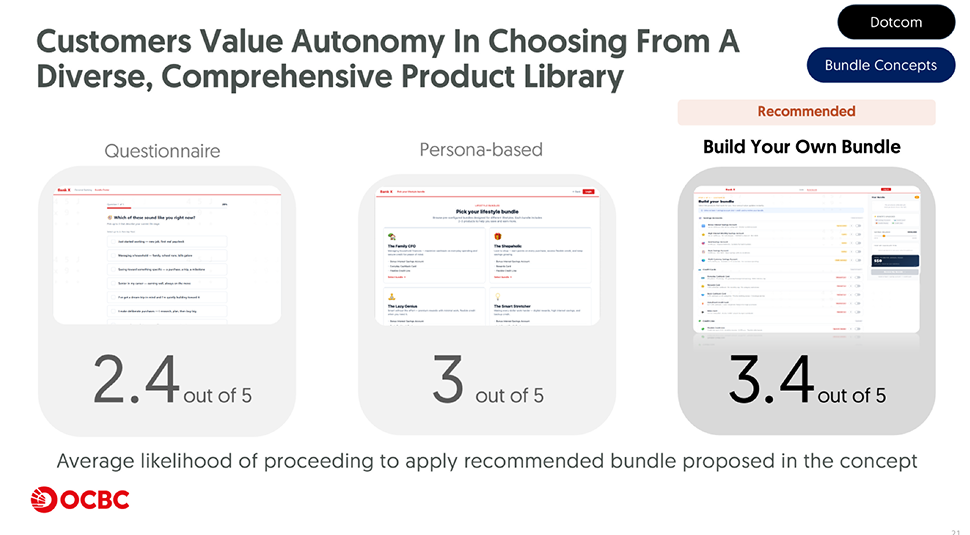
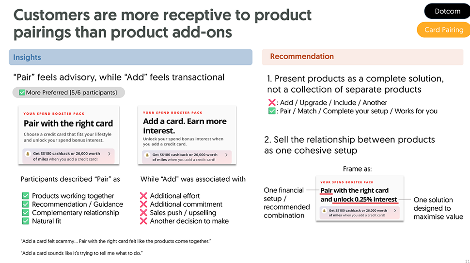
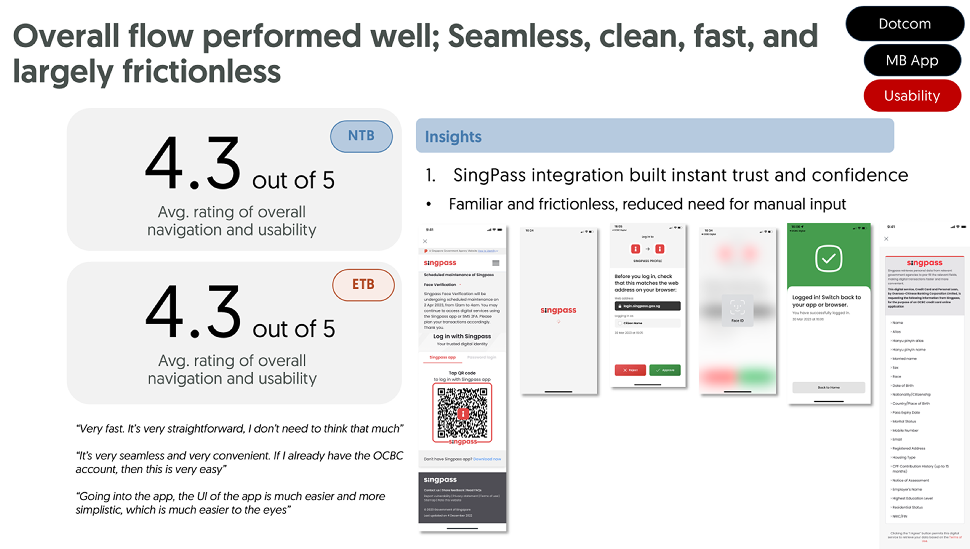
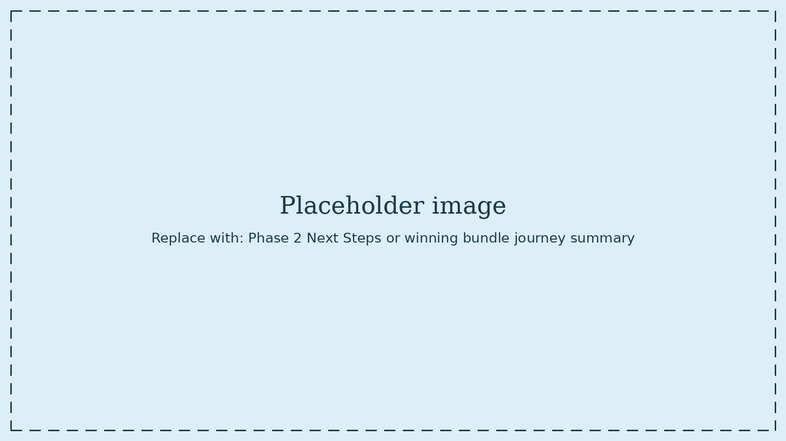

The challenge
OCBC's onboarding was built around single products. Someone opening a 360 Account and someone applying for a 365 Credit Card went through two separate journeys, even though many customers wanted — and would benefit from — both. Everything beyond that specific pairing was even more disjointed.
How might we design a unified application journey that lets both new-to-bank (NTB) and existing-to-bank (ETB) customers apply for multiple products in a single, seamless process?
The scope was large — two channels (Dotcom and MB App), two customer types, and a set of decisions that touched everything from entry points to messaging to the end-to-end application flow. I co-led the research across both phases.
Research & discovery
We ran this as two phases across four months.
Phase 1 — Exploratory (Mar – Apr 2026)
Where should bundle discovery live, and which bundling concepts do customers actually want? We spoke to 23 customers across 3 segments (New to Workforce, Mature Working Adults, Young Senior), split by channel: NTB customers through focus group discussions on Dotcom, ETB customers through moderated lab interviews on the MB App. We tested three entry points per channel, then three bundle concepts (Questionnaire, Persona-based, and Build Your Own Bundle) to see what resonated.
Phase 2 — Refinement (May – Jun 2026)
With direction set, Phase 2 zoomed in on the end-to-end application journey. We ran moderated lab interviews with 12 customers (6 NTB, 6 ETB), testing the pairings that had emerged as more natural fits: 360 Account with core cards for NTB, Global Savings Account with 90N and Rewards Card for ETB. Two research tracks ran in parallel — usability of the full website-to-app journey, and receptivity to product suggestions and value framing along the way.
Across both phases, I co-designed the discussion guides and synthesis frameworks, moderated sessions both solo and alongside my co-lead, and contributed to synthesis and reporting.
What we found
Phase 1 — Three findings shaped everything after
Control is the #1 driver of intent to apply.
Of three bundle concepts tested, Build Your Own Bundle scored 3.4/5, Persona-based 3, and Questionnaire 2.4 — and 10 of 17 NTB customers ranked BYOB as their favourite. Customers wanted to build their own solutions, not have solutions built for them.
Entry points complement each other rather than compete.
Push notifications drove direct clicks. Mastheads carried post-login trust. Product checkout felt like the most natural sequence. Different customers converted through different points — the answer wasn't to pick one, but to leverage all three with distinct roles.
Personalised messaging is essential.
ETB customers rated interest in personalised bundles at 4/5. Generic messaging felt like ads. Specific, benefit-led, product-named messaging built trust.
"If the messaging is right, I'll apply."

Phase 2 — The journey works. The value proposition doesn't yet.
The end-to-end flow itself is strong.
4.3 out of 5 for overall usability, from both NTB and ETB customers
SingPass integration built instant trust, review pages reassured, and the seamless carry-over from Dotcom to MB App was appreciated once it happened.
But the website-to-app handoff is the biggest friction point.
8 of 12 participants expressed uncertainty about whether their selected products would actually carry across the transition — reassurance was arriving too late in the flow.
"Honestly, I would be doubtful. I don't know if the information will be transferred over."
"Pair" beats "Add" — framing changes everything.
When card pairings on the 360 product page were framed as "Pair with the right card" versus "Add a card. Earn more interest," 5 of 6 participants preferred "Pair." "Add" felt transactional and upsell-y. "Pair" felt advisory and complementary — a natural extension rather than a sales push.
Product pairings work — but only when the value is worth acting on.
Customers understood why products were being paired (3.2/5 for likelihood to apply) but weren't compelled enough to act. The pairing logic worked. The reward incentive didn't.
Personalisation needs to be channel-specific.
ETB customers favoured tailored, data-backed content on the MB App — "Looks like travel's a big part of your spending" — but wanted generic messaging on Dotcom. What lands post-login as personalisation feels intrusive pre-login. Context matters as much as content.


The solution
The research produced a clear direction for what a unified bundling journey needs to do:
Give customers control.
Build Your Own Bundle over persona-matching or questionnaires — with a comprehensive product library and clear value labels rather than persona names ("Recommended" and "Interest Boost" over "For You").
Leverage multiple entry points with distinct roles.
Push notifications for immediacy, mastheads for trust, checkout pages for natural sequence — each doing what it does best.
Frame products as pairings, not add-ons.
Language matters. "Pair" positions products as complementary; "Add" positions them as upsell. The former converts; the latter deflects.
Close the website-to-app gap.
Surface the carry-over confirmation before the transition, not after. Show selected products and set expectations before SingPass is triggered.
Personalise where it earns trust, not where it feels intrusive.
Data-backed personalisation on the MB App (post-login, high trust); benefit-led generic messaging on Dotcom (pre-login, lower trust).
Findings are now feeding four concrete workstreams: reward incentive design with the Segment & Product team, a marketing and messaging framework for ocbc.com updates and campaigns, personalisation work with the AI lab for the recommendation engine, and a Bundle CVP enhancement as a longer-term consideration.

Outcome & reflections
Across two phases, this research shaped the direction of a genuinely large bet — how OCBC will move from single-product onboarding to a bundled experience across two channels and two customer types.
The most important finding wasn't about placement or wording. It was that value, not usability, is the primary conversion barrier. The flow works. What needs work is the reward proposition that gets people to say yes.
What I'm proud of here isn't that it went smoothly, but that we took the initiative and followed it through. Across two phases we worked out where bundling should live, which concepts customers actually wanted, and how the end to end journey held up. The flow tested well. What we could show, with evidence, was that the thing standing between a good journey and an actual conversion was the value proposition itself.
That mattered because it was not our call to fix. The reward mechanics sat with Product and Segment, and research findings about messaging or usability would not have moved that conversation on their own. Being able to point at specific numbers and specific customer language gave the value proposition question weight it did not have before, and it is now a live workstream rather than an assumption. Getting a product team to reopen something they had considered settled is a slow kind of win, but it is the one I would point to from this project.